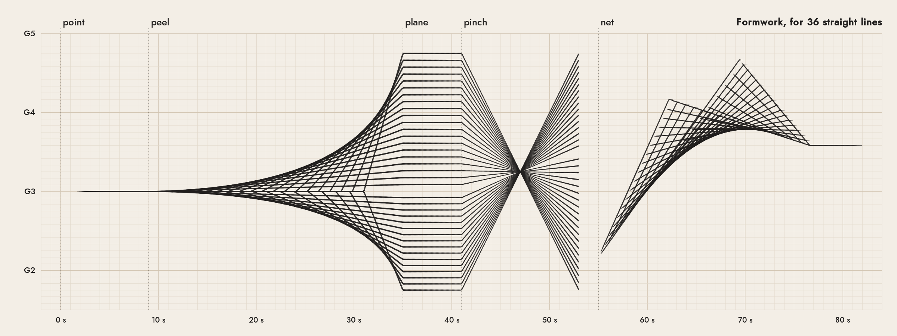
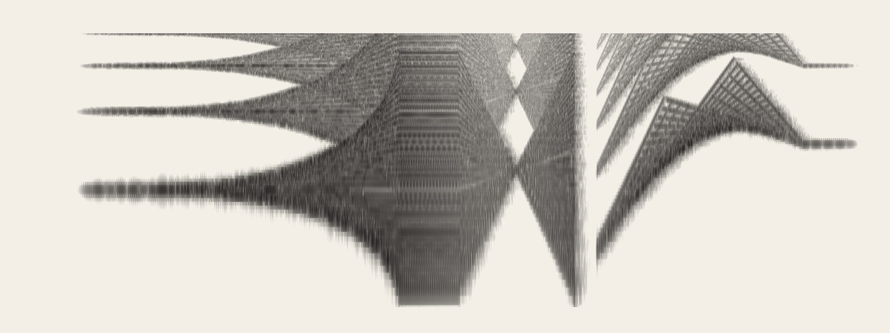

Formwork, for 36 straight lines
Every voice in this piece moves in straight lines: it holds a pitch or glides at a constant rate in semitones, never along a curve. The curves you can see in the score are envelopes, where neighbouring lines cross, the way a hyperbolic paraboloid can be built from straight boards and still come out curved. Xenakis drew the opening and closing sections of Metastaseis (1953–54) with straight glissandi like this, and later traced the Philips Pavilion's ruled surfaces back to that score.
Point, a unison on G3. Peel: the voices leave it one by one, each on its own line, and the edges of the sound bend. Plane. Pinch: every line passes through one point. Then a hyperbolic paraboloid seen with its twist showing, from one point to another.


Nobody plays a curve. Which curves do you hear? I can't listen to it, so I composed with the drawing and checked the render as a picture. "Show the sound" swaps in the audio's log-frequency spectrogram on the same axes, where every line comes back an octave, a twelfth and two octaves up as its own overtones. Synthesis: additive strings with a little vibrato, in a synthetic room.